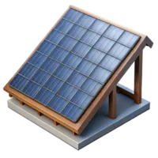
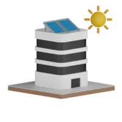
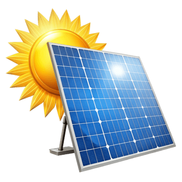

Instalaciones Solares
Introducción a las instalaciones solares ☀️
La energía solar es una de las fuentes de energía renovable más utilizadas en el mundo, ya que aprovecha la radiación del sol para producir calor o electricidad.
Las instalaciones solares se dividen principalmente en dos grandes familias:
Instalaciones solares térmicas → convierten la energía del sol en calor.
Instalaciones solares fotovoltaicas → convierten la energía del sol en electricidad.


